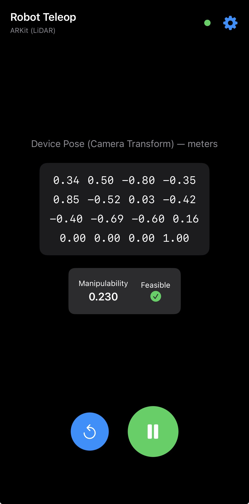

Demo Video
Motivation
Modern robot learning pipelines — particularly Vision-Language-Action (VLA) models — depend on large volumes of high-quality human demonstration data. Traditional teleoperation interfaces such as teach pendants and joysticks are unintuitive for full 6-DOF control, creating a bottleneck in data collection. Smartphones, already equipped with IMUs, cameras, and on-device computer vision, offer a natural alternative: humans already manipulate phones in three dimensions without thinking about it, making the phone itself an ergonomic spatial controller.


System Overview
The system pipeline runs from phone to robot in real time over WebSocket. Apple's ARKit framework continuously estimates the phone's 6-DOF pose using visual-inertial odometry (VIO) — fusing camera feature tracking with IMU data through an error-state Extended Kalman Filter. The resulting pose is expressed relative to an ARKit world frame (Y-up, gravity-aligned), then remapped to the robot's coordinate frame via a permutation matrix. Live feedback on manipulability and joint limit proximity is streamed back to a web dashboard.

Control Modes
Velocity Mode
The phone's instantaneous twist (linear and angular velocity) is mapped directly to joint velocities using resolved-rate control via the UR10e's geometric Jacobian. A damped least-squares pseudoinverse with adaptive damping — scaled by the manipulability measure — prevents instability near kinematic singularities. An exponential moving average filters the twist signal to smooth control inputs.

Position Mode
The phone's displacement from a saved reference pose is interpreted as a desired end-effector target. The system solves for joint angles using closed-form analytical inverse kinematics derived from the UR10e's Denavit-Hartenberg parameters. This mode produces smoother, more predictable trajectories for precision tasks.

Results
The system operates in real time with end-to-end latency under 100 ms. Position mode demonstrates responsive joint trajectories following the phone's motion, while velocity mode produces smooth profiles with the adaptive damping mitigating singularity effects. A reset behavior snaps the robot to its home configuration and re-references the phone pose on demand.


Web-based debug dashboard displaying live joint angles, manipulability bar, twist magnitude, joint limit proximity, and system status — updated in real time over WebSocket.
Shortcomings & Future Work
- Simulation only — the system was not validated on physical hardware.
- VIO drift — ARKit pose estimates accumulate error in feature-poor environments.
- No collision avoidance — joint trajectories do not account for obstacles.
- Future: Real UR10e integration, gripper/grasping support, trajectory smoothing, multi-user teleoperation, and online drift correction.